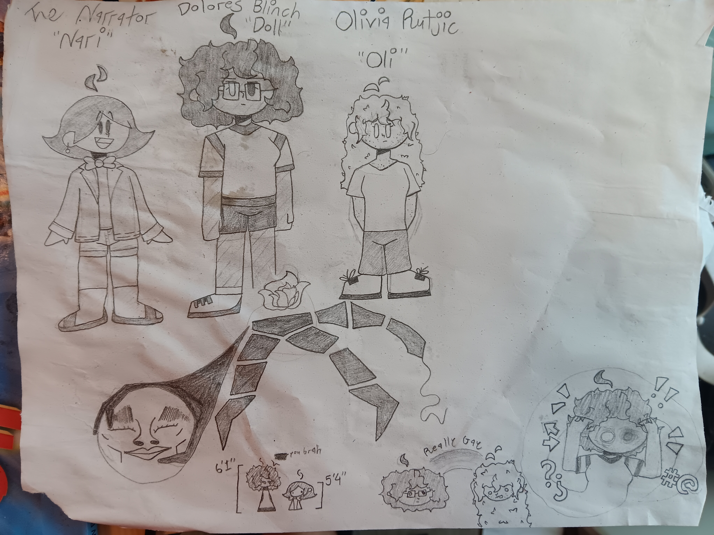
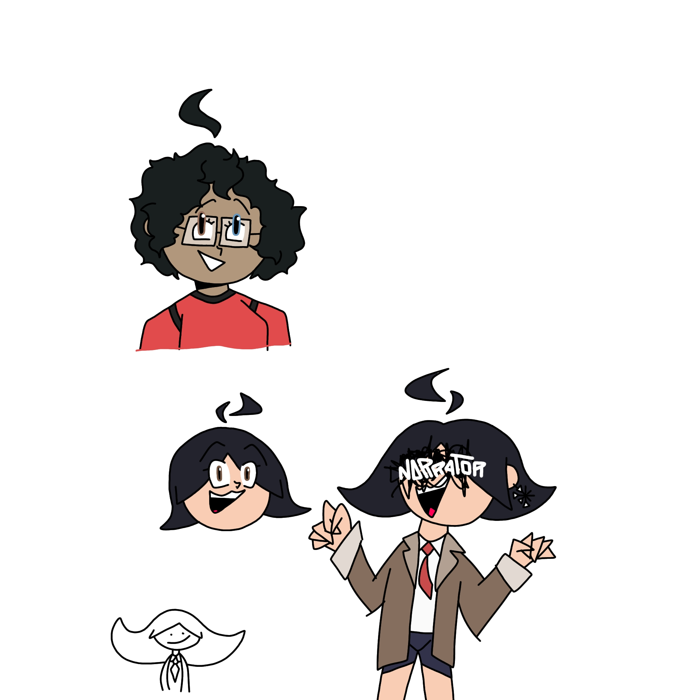
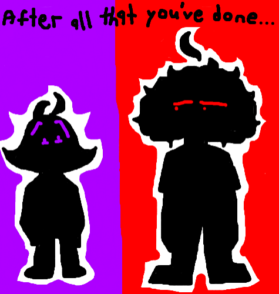
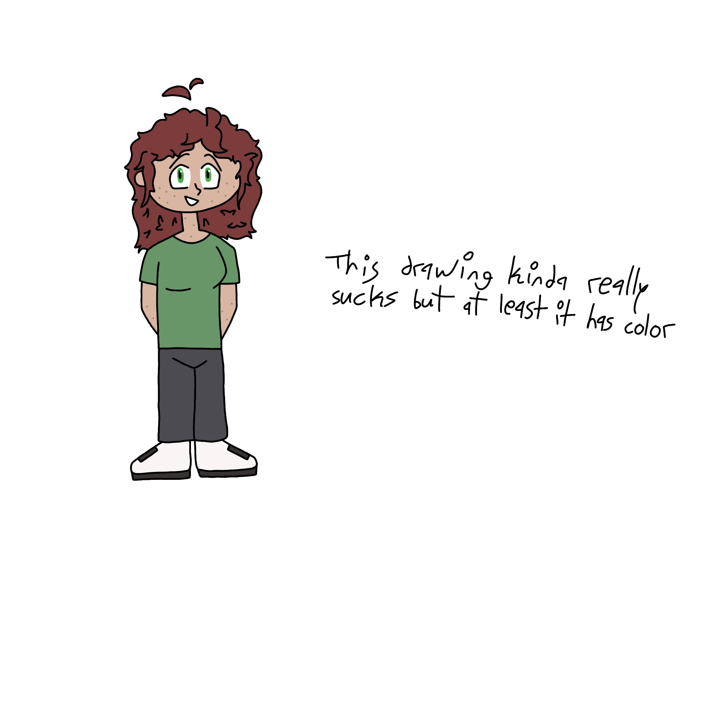
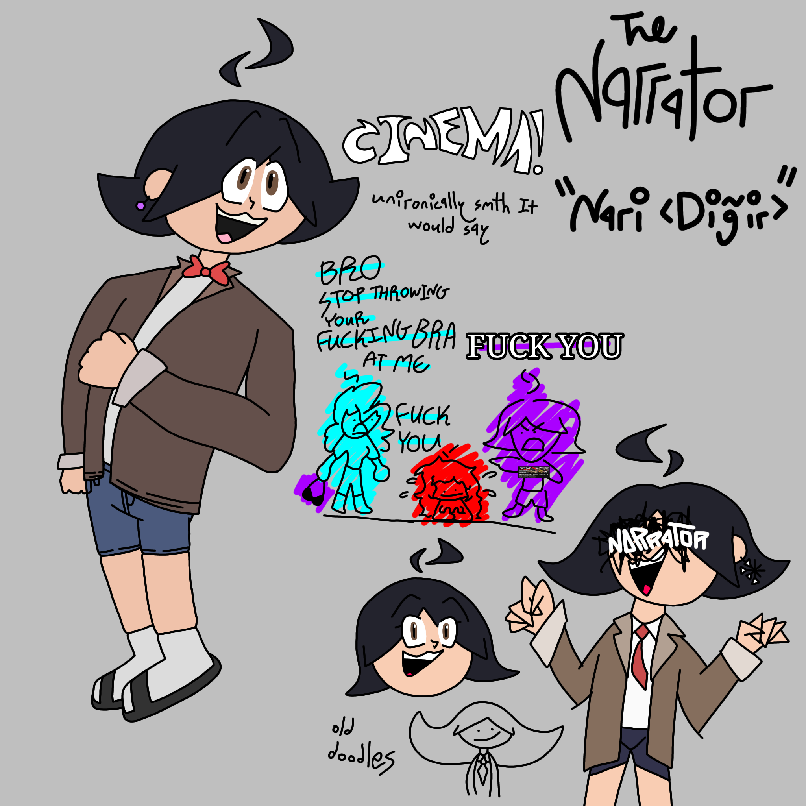
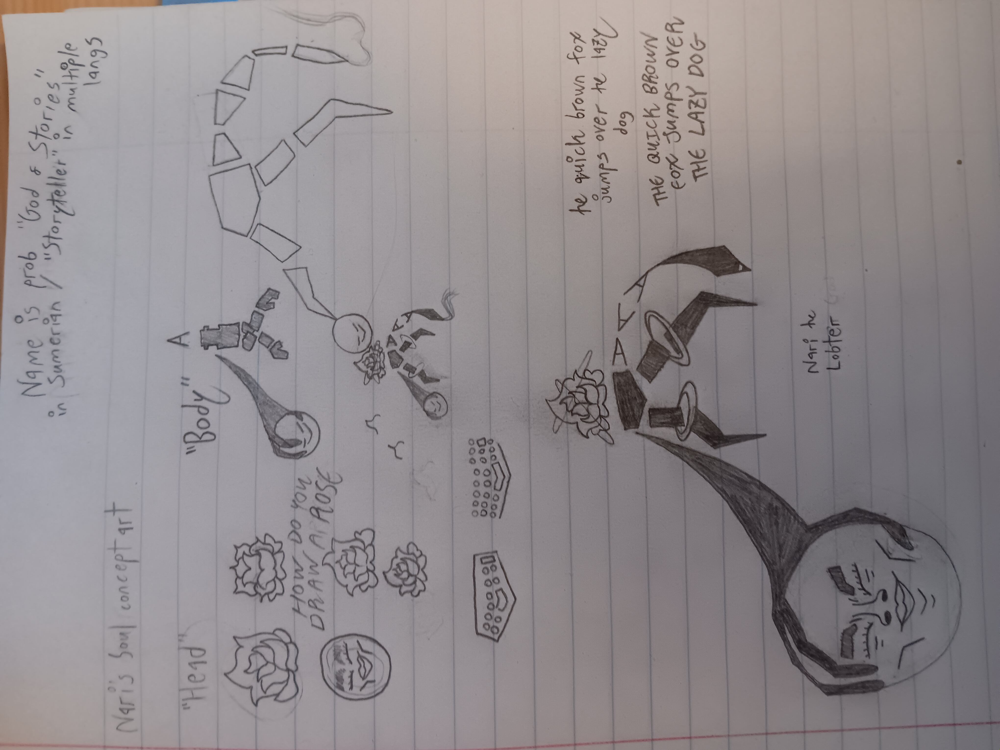

Dolores Blinch, or simply Doll, is the protagonist of CO-WRITERS. The more expanded upon and completed version of Taylor, she suddenly gained consciousness on August 20, 2025 due to Nari desiring but not knowing how to achieve humanity, and It thinking that achieving those goals through another human was what was needed. Early on in the story, even with the introduction of Oli later, she serves as the main example of how Nari's actions affect people's livelihoods, present and future. Nari is very uncaring to Doll early on, and It forces her to do stuff she doesn't want to do or go along with, and so their relationship is built on what is essentially verbal and emotional abuse, and being taken advantage of during a vulnerable stage in life.
Later, once Nari gets It's Vessel, their story becomes more focused on the desire but inability to forgive, specifically trying to forgive someone who clearly changed or is actively trying to change. Doll can see Nari's want to change, and she can even see It's improvements, but that doesn't make it any more possible for her to forgive it. And the worst part is that she used to believe It could be what It wanted. A human. Someone who changed for the better, and someone who got what they wanted. But ever since that day, September 24, where Doll was accidentally killed and left dead for 14 seconds, that dream has been shattered. It especially sucks when she has to watch Oli keep her faith in Nari, still clinging onto the belief that It can change and become human. It sure would be beneficial for everyone involved, but unfortunately, Doll just can't believe in It anymore.
Doll also has themes of martyrdom in her story, going through uncomfortable lengths to keep the truth about Nari and their world from everyone else in the city, although they dwindle as her faith in Nari does. Oli's the one to pick those themes right back up, though.

Olivia Rutjic (/ˈruːdʒɪk/ "ROO-jik"), or simply Oli, is the deuteragonist of CO-WRITERS. Serving as an emotional anchor and comforter for her eventual girlfriend Doll, she's the one to try and keep the group from falling apart. Being there when Doll needs her, and ensuring Nari that she still believes in It's ability to change and become human, on the surface, she seems like the healthiest character mentally. Unfortunately, a common theme shown with Oli is her masking her actual thoughts, hiding hatred and disgust being a wall of "I believe in you"s. But she thinks it's worth it in the end, to hide it all. Because she's also, what I've been calling her, a martyr.
The official definition may be different from how I use it, but Oli is a martyr in the same sense that early Doll is: they both go to uncomfortable lengths to hide Nari and the truth about their world from everyone else, even if it hurts them. Unfortunately, after Doll lost her faith in Nari and her martyrdom dwindled, Oli's grew. She's almost entirely convinced herself that her purpose is to hide Nari from others and heal Doll, even if it hurts her, and if she fails, she is a failed person. This manifests horribly towards the end of the story.
She also serves as the main connection between group 1 and 2, which I'll expand on in Kirby's section.



The Narrator, or simply Nari, is the primary antagonist of CO-WRITERS. Having been creating worlds and stories for an uncountable amount of years, and narrating over those usual boring stories for just as long, It got fed up one day while narrating a romcom called "Smith & Satoh". On the first day the story was supposed to take place, August 19, 2025, It derailed and started doing stuff It wanted to do by Itself, leaving the original Script to also derail and go down an entirely different route. After long enough wandering around the main city, though, It saw what humans did on a daily basis and decided that It didn't want to just be a spectator anymore. That's when It found Doll, a background character scrolling on her phone at the Tachi Sunset Murals. A perfect candidate.
While all versions of Nari share many characteristics—being socially unaware most of the time, avoiding lying, and possessing other personality traits somewhat comparable to ASD—early Nari and Nari once It gets a Vessel are two very different "people." By October, Nari realizes how distant It's grown from Doll and how sour their relationship has gotten, and although It doesn't really know how to, It desperately wants to mend their relationship. After all, she was the first human It had attached Itself to. Maybe now that It's no longer just a voice in her head and now a physical person walking around, maybe the two could get along now?
Nari is not evil. It's just morally distant.